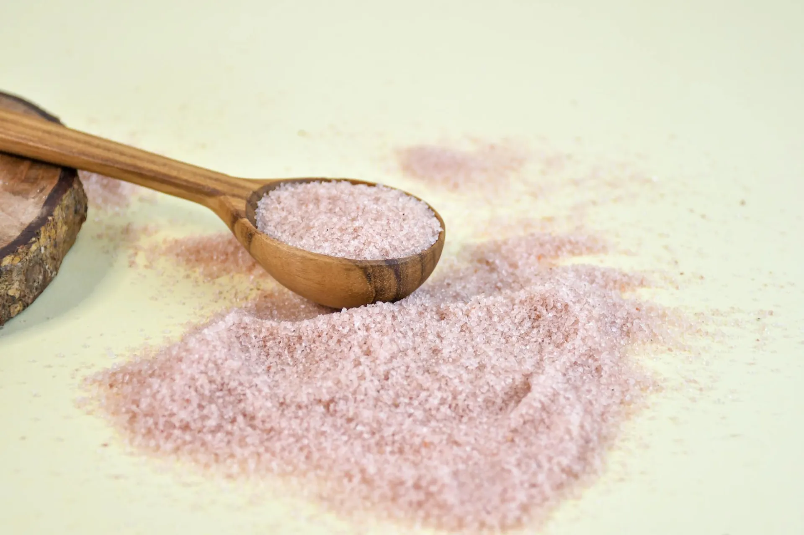

Mindful Arrival
You are welcomed into our mineral antechamber — a transitional space designed to gently draw you out of the pace of your everyday life. The scent of Himalayan salt mingles with diffused organic botanicals. Soft amber light begins its work immediately on your nervous system.
Remove outdoor footwear and deposit belongings in your personal locker.
Our receptionist offers a warm welcome consultation — we review any health notes from your booking.
A moment of settling: our antechamber is a transition zone, not a waiting room. Please take your time.

The Preparation Chamber
In our preparation room, you change into cave-appropriate clothing — loose cotton robes are provided or you may wear your own comfortable attire. Our halotherapy specialist meets with you here for a focused breathing consultation that is unique to each visit.
Diaphragmatic breathing instruction: you will learn to breathe deeply through the nose, maximising mineral absorption in the upper airways.
Our therapist reviews any respiratory symptoms from your previous session, adjusting the halogenerator concentration as needed.
If this is your first visit, a brief overview of what to expect — sounds, sensations, and the mineral taste of salt air.
Crossing the Threshold
The cave door opens. You step onto a floor of pure Himalayan salt crystals. The walls — built from 14 tonnes of hand-cut salt blocks — glow amber in the warm chromotherapy light. The temperature is maintained at a constant 68°F, humidity at 50%. You feel it immediately: the air is different here.
Settle into your reclining cave chair — positioned for both comfort and optimal salt aerosol exposure.
The halogenerator activates. A barely perceptible mist of 4.5μm salt particles begins to fill the chamber.
Silence. The only sound is the gentle hum of the climate system and, if you listen, your own breath slowing.

The Salt Therapy
For 45 minutes, the cave becomes your complete world. Breathe naturally — there is nothing to do, nothing to achieve. The pharmaceutical-grade salt aerosol navigates your airways automatically, reaching into the bronchioles where normal medicines struggle to penetrate. The minerals are absorbed. The inflammation recedes.
The halogenerator runs continuously, maintaining consistent therapeutic aerosol concentration throughout the session.
Many guests experience gentle thinning of mucus — this is the salt drawing fluid from inflamed airway tissue, the healing mechanism at work.
The negative ion environment suppresses cortisol release. Most guests are deeply relaxed within 15 minutes. Many drift into a light sleep.
The Integration Ritual
The session draws to a close gently — soft music rising gradually, lighting warming. There is no abrupt end. Our therapist meets you in the antechamber with a warm Himalayan mineral herbal tea, and takes a moment to discuss what you experienced and what you may notice in the hours and days following.
Expect continued mucociliary clearing for 12–24 hours after the session — this is the salt therapy continuing its work.
Your therapist provides a written post-session care protocol tailored to your health history and session observations.
Book your next session before leaving: cumulative benefits compound with each visit in the series.